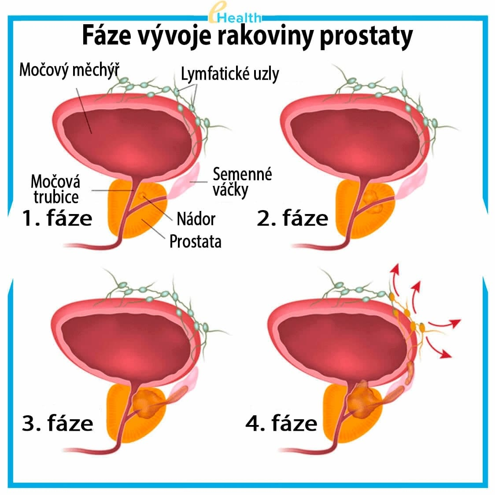
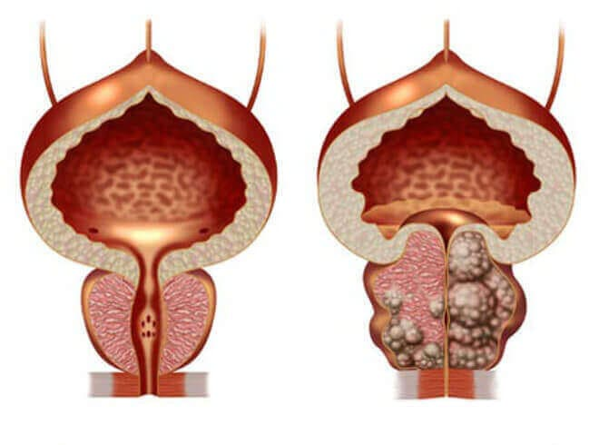

V Izraeli jsou muži léčeni na prostatitidu za 2-3 týdny
jednou za život a navždy
(metoda je popsána níže)
Současně v České republice chamtiví doktoři podle úmluvy s lékárnami skrývají účinné léky a každoročně vysávají od mužů peníze tím, že vypisují drahé léky a procedury! (Chcete-li zjistit, jak a kde najít izraelský přípravek, pečlivě si přečtěte článek níže)
Prostatitida je jednou z nejčastějších nemocí u mužů starších 40 let a zároveň lékaři zaznamenávají nepříjemnou tendenci k „omlazení“ nemoci. Muži ve věku 30, 25 a dokonce 20 let se stále častěji obracejí s těmito problémy k lékařům.

Následující návyky a chování vyvolávají nemoc.
- - sedavý životní styl,,
- - nepravidelný sexuální život,
- - přenosné infekční choroby,
- - dědičná predispozice,
- - stres a nemoci urogenitálního systému.
V moderním světě je velmi snadné získat problémy s prostatou. Někdo onemocní ve 25, někdo ve 45, je to jen otázka času.
Zkontrolujte, zda máte příznaky prostatitidy:
V roce 2018 zveřejnilo Centrum pro studium urologických chorob hrůzné statistiky: více než 55% mužů nad 40 let trpí problémy s prostatou. Je poměrně snadné určit přítomnost prostatitidy i bez lékařského vzdělání, většina
-
Řezná bolest:
- - v dolní části břicha a šourku;
- - v perineu nebo penisu;
-
Poruchy močení:
- - časté močení, pálení v močové trubici;
- - pocit „neúplně prázdného močového měchýře“;
- - potíže s močením (slabý proud);
-
Poruchy genitálních funkcí:
- - snížení sexuální touhy;
- - zhoršení délky a kvality erekce;
-
Porucha ejakulace:
- - předčasná ejakulace nebo problémy s jejím dosahováním;
- - slabá ejakulace.
-
A také zvýšená unavitelnost a podrážděnost.
Navzdory zřejmému poklesu kvality života mnoho mužů žije s prostatitidou po celá léta, aniž by si byli vědomi nezvratných důsledků, k nimž mohou tyto více či méně slučitelné životní nepříjemné pocity vést.

Neúplně vyléčená prostatitida vždy vede k adenomu
prostaty („mužská smrt“)
Zčásti mohou být tito muži pochopeni, diagnóza „prostatitidy“ u každého člověka, který chápe tento proces, způsobuje těžkou depresi a rozpaky. Kromě toho se ve velké většině případů po diagnostice prostatitidy stává návštěva urologa každoroční bolestivou povinností. Lékaři zmírňují nejakutnější příznaky léky „doporučenými lékárníky“, ale jakmile porušíte jejich nejmenší předpis, vrátí se prostatitida.
Jak se v naší zemi léčí prostatitida (a jak se NEMÁ léčit)
Nejsmutnější je, že zbavit se prostatitidy je nemožné, i když to opravdu chcete.
Standardní léčba prostatitidy:
- Jdete do nemocnice nebo k lékaři: na tom nezáleží, protože nakonec budete muset zaplatit.
- Lékař provádí vyšetření, předepisuje mnoho testů. Některé z nich nejsou potřebné, ale vykonávají se pouze proto, aby našli něco jiného, co by bylo možné léčit. Navíc samotné analýzy taky stojí peníze.
- Po vyšetření lékař diagnostikuje „prostatitidu“ a předepíše „doporučené přípravky“. Přípravky jsou předepsány ty, které jsou určeny k úlevě od akutních příznaků, a nikoli k léčbě chronické prostatitidy. A urolog samozřejmě doporučuje léky těch společností, jejichž zdravotní zástupci mu přinesli nejvíce peněz. O těchto lékách mluví všichni.
- Kromě „doporučených“ léků lékaři vždy k úlevě od příznaků předepisují rektální masáž
prostaty nebo léčbu podobnou metodou. Jedná se o ponižující a velmi nepříjemnou
proceduru - masáž se provádí prstem přes konečník muže. V průměru je potřeba 10–14
masáží. Za každou masáži samozřejmě musíte zaplatit.
- Kromě hlavní léčby lékaři často předepisují léky, které zlepšují sexuální funkce, zlepšují kvalitu spermií, „obnovují tělo“ po antibiotikách atd.
Výsledkem je, že jednorázová léčba prostatitidy v České republice stojí 5000-10000 České koruny, urologové ve skutečnosti formují léčebný cyklus v závislosti na finančních možnostech pacienta. V tomto případě budou odstraněny pouze hlavní akutní příznaky nemoci. Chronická prostatitida zůstane a objeví se, jakmile přestanete dodržovat dietu předepsanou lékařem. V důsledku toho budete muset tyto částky platit ročně; činnost farmaceutických společností je založena právě na tomto.
Jak se v Izraeli léčí prostatitida?
V Izraeli nepotřebujete ani navštívit lékaře k léčbě prostatitidy. Stačí jít do lékárny hned u prvních příznaků a koupit si lék, který byl testován po celá desetiletí a který se na ruském trhu neobjevuje jen proto, že pomáhá úplně se zbavit chronické prostatitidy (jednou za život a navždy)! Takový lék pro českou farmaceutickou mafii samozřejmě není prospěšný. Nakonec je mnohem výhodnější, aby lidé každý rok odstraňovali bolestivé příznaky než vyléčili nemoc šetrným lékem, který je k dispozici naprosto každému. Na rozdíl od naší země je soukromé zdravotní pojištění v Izraeli vysoce rozvinuté. Zdravotní pojišťovny nemají zájem o to, aby pacienti navštěvovali lékaře více než dvakrát ročně, za to všechno musejí platit společnosti, a platy lékařů jsou tam dost vysoké. Naopak, mají zájem o co nejúčinnější a nejrychlejší léčbu.
V Izraeli zájmy pojišťoven porazily mafii farmaceutických společností, a naštěstí pro obyčejné muže se zde vždy prodává účinný prostčedek pro léčbu prostatitidy ...
Změní se situace v České republice k lepšímu?
Pozitivní změny v této oblasti bohužel nelze očekávat, protože to neumožňuje multibilionový obchod evropských farmaceutických společností.
Dnes však nemusíte přípravky kupovat v lékárně. To lze provést na internetu na specializovaných stránkách. V poslední době byl nejúčinnějším lékem v Izraeli uznán . Tento produkt lze zakoupit také v naší zemi. Téměř okamžitě poté, co se objevil na trhu, se stal velmi populární.
Pojďme porovnat, jak se liší od nejoblíbenějších přípravků prodávaných v lékárnách.

|
 Další přípravek |
|
|---|---|---|
| Cena: | ZÍSKEJTE ZA 50% SLEVU! | Asi 52 eur za 90 kapslí. Doporučený kurz: 3 balíčky = 156 EUR |
| Působení: | Úplně uzdravuje prostatitidu, a to i v chronické formě. Jednou provždy. Pouze po 1 kurzu léčení. | Zmírňuje akutní příznaky prostatitidy - bolesti a poruchy močení. |
| Další účinky: | º Vylepšuje libido º Zabraňuje předčasné ejakulaci º Zvyšuje potenci º Normalizuje práci močového měchýře º Zlepšuje stav cév |
Změkčuje stolici, zvyšuje střevní motilitu |
| Vedlejší účinky, poškození těla | Chybí. Složky jsou zcela přírodní. | º Při častém používání může způsobit maligní změny v
prostatu º Snižuje potenci º Způsobuje střevní potíže º Potlačuje imunitní systém, podporuje vývoj alergie º Způsobuje silné bolesti břicha |
| Princip působení: | Působí na prostatu v komplexu díky speciálně vybranému složení přírodních ingrediencí, má protizánětlivý a celkově posilující účinek. Odstraňuje veškerou patogenní flóru z prostaty, zlepšuje strukturu a funkci prostaty. Doporučuje se pro chronickou, městnavou a bakteriální prostatitidu. | Dočasně zmírňuje bolest prostaty a maskuje průběh nemoci. Po ukončení léku se však choroba opět zhoršuje. |
| Ingredience: | Přírodní rostlinné komponenty | Jedinou přírodní složkou jsou drcené plody trpasličích palem (žádný extrakt!). Všechno ostatní – samá chemie - oxid titaničitý; barvivo - černé oxidové železo; košenilová červeň (E 124), atd. |
| Záruky: | 365 denní záruka výrobce | bez záruky |
V naší zemi se výrobci však podařilo tento lék zpřístupnit všem! Po zdlouhavých jednáních „se správnými lidmi“ se nám podařilo zahájit federální program „Mužské zdraví“. Účel programu: dát každému člověku příležitost vyléčit prostatitidu, aniž by ji přivedl do stadia rakoviny, bez ohledu na jeho finanční stav. V rámci tohoto federálního programu obdržíte s 50% slevou!
si můžete koupit na webových stránkách výrobce kliknutím na příslušné tlačítko níže.
Hlavní lékárnické řetězce v zemi již zahájily rozsáhlou kampaň proti tomuto prostčedku. Je možné, že jeho prodej bude brzy zastaven. Doporučujeme, aby si všichni muži kupovali když ještě je to možné. Do (včetně) bude lék prodáván s 50% slevou!
ZÍSKEJTE ZA 50% SLEVU! POŽÁDEJTE O ÚČAST NA PROGRAMU. POSLEDNÍ DEN NA OBJEDNÁVKU PROSTŘEDKU SE SLEVOU - (VČETNĚ)
Kryštof
Celekm potvrzuji! je zázračný lék. Koupil jsem to v Černé Hoře, kde jsem byl loni v létě na dovolené, dal jsem téměř 70 eur. Předtím jsem trpěl chronickou prostatitidou asi 10 let, snažil jsem se ji léčit klasickými léky, i když pomáhaly pouze dočasně. Po u úplně zmizely příznaky prostatitidy. Doporučuji všem mužům. Pomůže to!
Dominik
Objednal jsem si to. Opravdu jsem dostal lék s 50% slevou! Příjemné překvapení. Děkuji!
Kamil
Také jsem měl zkušenosti s léčbou prostatitidy tímto lékem. Koupil jsem ji na uvedené stránce, ale teprve poté nebyly žádné slevy a stálo to asi 3 000 České koruny za balíček. Ale tyto peníze to opravdu stojí, pomohlo mi zbavit se prostatitidy asi za 2 týdny bez masáže.
Vítězslav
Viděl jsem televizní vysílání, v němž se hovořilo o tomto prostředku, ale ten se neprodává v lékárnách v Ruské federaci. Byl to druh novinářské investigace. Chci se o tomto léku dozvědět více.
Lubomír
Mám chronickou prostatitidu, odkdy mi bylo 28 let. Nyní mi je 41. Během této doby jsem se léčil dvakrát, ale nedosáhl jsem skvělých výsledků. Naposledy lékaři mě sotva zachránili. Řekli, že prostatitida se může transformovat na rakovinu prostaty. Proto doporučuji každému, kdo má prostatitidu, aby se toho co nejdříve zbavil. Je to velmi nebezpečné pro zdraví.
Jarmila
Nezapomenu to objednat pro manžela. Děkuji!
Miloslav
ЯProdukt jsem obdržel s 50% slevou. Díky výrobcům!
Patrik
je nejlepší lék! Souhlasím s autorem článku a se všemi komentátory, kteří ho chválili. Použil jsem to asi před 3 měsíci. Nemám žádnou stopu prostatitidy! Trpěl jsem mnoho let, ale teď se cítím skvěle.
Vojtěch
Skvělý lék!
Hynek
Více informací jsem našel na oficiálních stránkách u. Velmi působivé! Slíbili, že po 5 dnech ke mně přijde poštou, to je velmi pohodlné.
Luboš
Opravdu dobrý prostředek. Nejprve jsem byl skeptický. Za pár dní mi to doručili. Nyní po měsíci použití nezůstal ani jediný příznak prostatitidy. Žádná bolest, žádný pocit pálení, žádné problémy s močením. Obecně jsem velmi spokojený. Doporučuji to.
Ludvik
Díky za zajímavý článek! V České republice je vše zkorumpované na nejvyšší úrovni, je dobré, že můžeme zjistit z internetu, o čem nám lékaři neřeknou. jsem objednal se slevou. Nakonec prostatitida skončí.